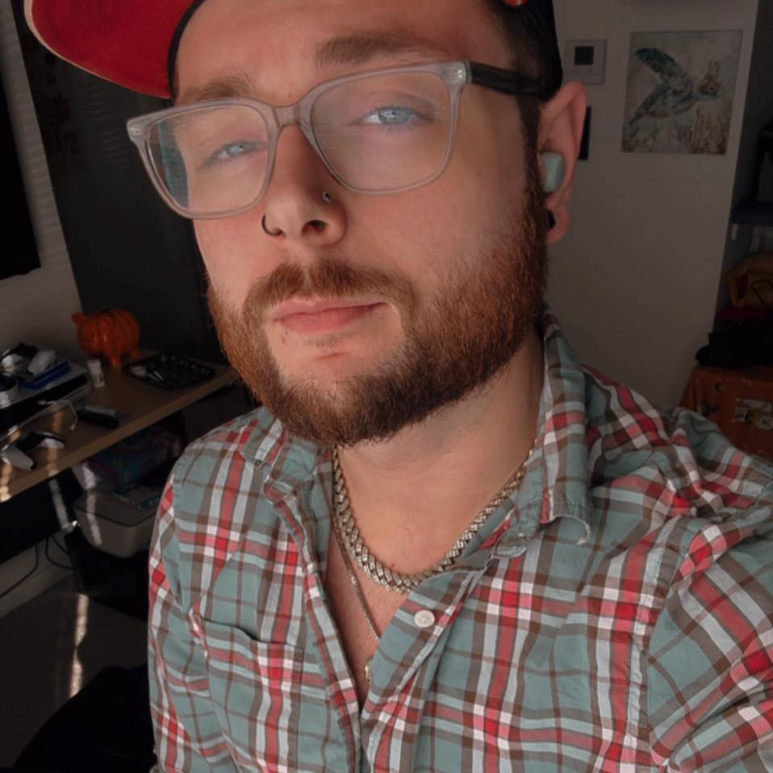

Hi, I’m Luke—a passionate, self-taught software developer based in Mishawaka, Indiana. While my current career is as a Registered Behavioral Technician, where I provide one-on-one therapy and implement behavior intervention plans to support autistic children, I’ve been building a strong foundation in software development through dedicated self-study and online courses from platforms like Udemy and freeCodeCamp. This dual path has taught me patience, attention to detail, and the ability to break down complex problems—skills I now channel into writing clean, efficient code.
I’m experienced in C, C++, Java, HTML, CSS, and JavaScript, and I’m comfortable navigating technology stacks and office tools with ease. As a fast typer with a keen eye for precision, I thrive on learning quickly and tackling new challenges. I’m currently pursuing a Computer Science Associate of Science degree at Ivy Tech Community College, following an earlier start at Indiana University South Bend. My goal is to transition fully into software development, where I can apply my dedication and fast-learning mindset to create meaningful, user-focused applications.
Outside of coding and client sessions, I’m a big fan of pop culture, horror movies, video games, and animals. I love spending quality time with family, exploring new travel destinations, and discovering exciting foods—experiences that keep me curious and open-minded. I’m excited to bring that same enthusiasm and adaptability to software projects, collaborations, or entry-level opportunities.
If you’re looking for a reliable, eager developer who’s always ready to grow, let’s connect!